Zentrum, Punkt
Werkzeugleiste / Symbol:


Menü: Zeichnen - Kreis - Zentrum, Punkt
Tastenkürzel: C, I
Kommandos: circle | ci
Beschreibung:
Konstruiert einen Kreis mit gegebenem Zentrum und einem Punkt auf der
Kreislinie.
Vorgehensweise:
- Bestimmen Sie das Zentrum mit der Maus oder geben Sie eine Koordinate in
die Kommandozeile ein.
- Bestimmen Sie den Radius mit der Maus oder geben Sie eine Koordinate oder
den Radius in die Kommandozeile ein.